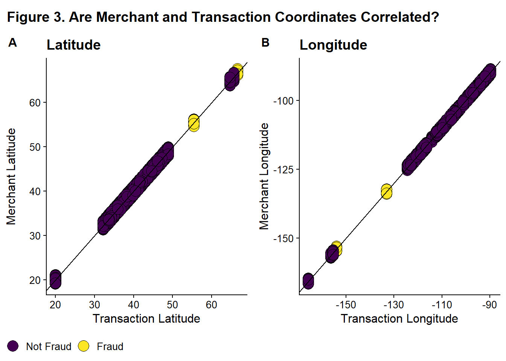
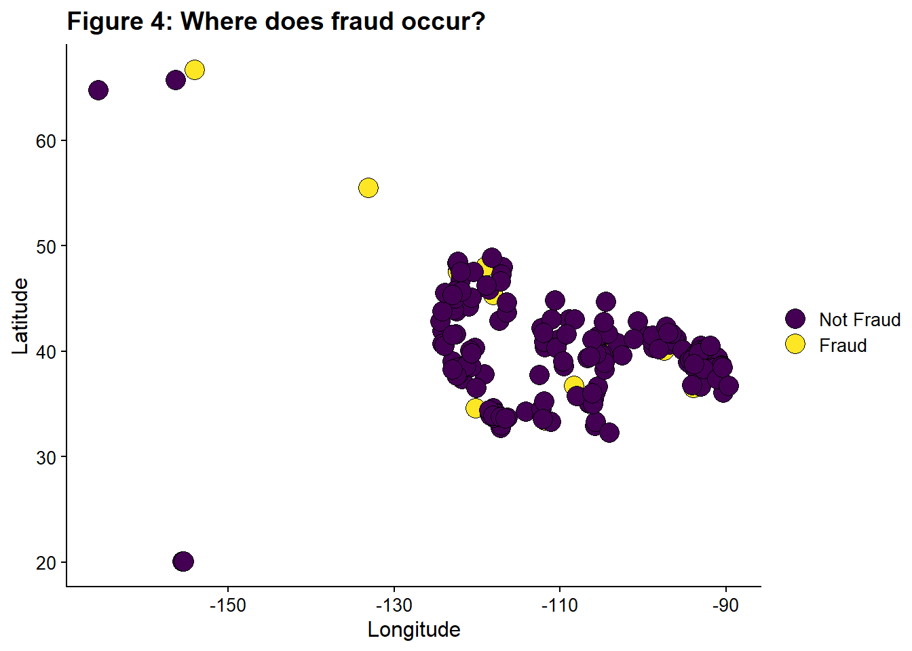
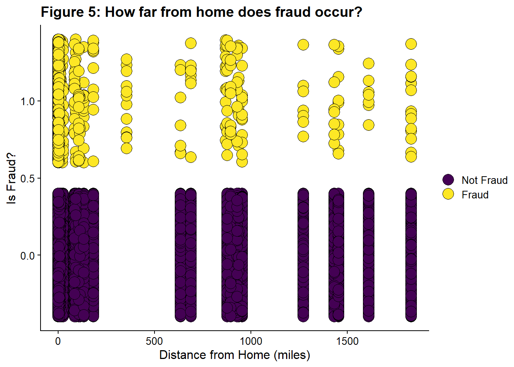

# loading tidyverse
library(tidyverse) #core tidyverse
# visualization
library(viridis) #color scheme that is colorblind friendly
library(ggthemes) # themes for ggplot
library(gt) # to make nice tables
library(cowplot) # to make multi-panel figures
library(corrplot) # nice correlation plot
#Data Cleaning
library(skimr) #provides overview of data and missingness
#Geospatial Data
library(tidygeocoder) #converts city/state to lat/longCredit Card Fraud: A Tidymodels Tutorial
R
R-code
tidymodels
machine learning
classifiers
An Imbalanced Class Problem
I’ve used the credit card fraud dataset from Datacamp for a variety of projects, most notabily the tidymodels and imbalance class tutorials. I’ve used it when I was learning Tableau and also Python. One advantage of working with the same dataset is that it becomes easier to catch errors in your analysis, or even in the dataset itself.
The geographic data always seemed a bit odd. The data dictionary, from datacamp, defines 3 sets of geographic variables. That will produce a notebook like this with the dataset and the data dictionary.
| city | City of Credit Card Holder |
| state | State of Credit Card Holder |
| lat | Latitude Location of Purchase |
| long | Longitude Location of Purchase |
| merch_lat | Latitude Location of Merchant |
| merch_long | Longitude Location of Merchant |
The original source of the data (prior to preparation by DataCamp) can be found here and does not include a data dictionary.
lat and merch_lat and long and merch_long were highly, but not perfectly, correlated, so I orginally dropped the merchant coordinates.
While playing with the dataset in Tableau, I became very confused about what lat/long and merch_lat/merch_long actually represented.
I puzzled over this for a long time (I finalized my Tableau dashboards in July, but never did anything with them, because I was so confused by my results. I did check the Tableau results by manually pulling out some subsets of data in R, and what I was seeing in my pretty Tableau maps was correct.
While trying to write up some thoughts about Tableau (in November), I decided to delve back into this question. I had looked at the Kaggle notebook discussions when I first starting working on this (which was probably last year!) and didn’t find much info. Now, someone had posted a comment about the two coordinates and someone replied that the lat/long is the location of the card holder’s home address, not the purchase location. This is so obvious (and clearly explains the results I showed in my dashboard) that it is kind of funny that I didn’t figure this out. It is a good lesson in checking all your assumptions carefully when things don’t make sense. I assumed that a dataset prepared by Datacamp would be correct and I assumed any weird results were because the person who coded the simulation had made some weird choices.
So, now I’m going to reanalyze the geographic data with this new definiton in mind.
1. Set-up steps
Loading the necessary libraries.
I’m setting a global theme for my figures. I’m using cowplot to create some composite figures, and apparently you must choose a cowplot theme if you set a global theme. You can use a ggtheme on a graph by graph basis, but not globally.
# setting global figure options
theme_set(theme_cowplot(12))Loading the data. This is a local copy that is part of the workspace download from Datacamp.
# Reading in the data
fraud <- read_csv('C:/Users/drsin/OneDrive/Documents/R Projects/lsinks.github.io/posts/2023-04-11-credit-card-fraud/datacamp_workspace/credit_card_fraud.csv', show_col_types = FALSE)
fraud# A tibble: 339,607 × 15
trans_date_trans_time merchant category amt city state lat long
<dttm> <chr> <chr> <dbl> <chr> <chr> <dbl> <dbl>
1 2019-01-01 00:00:44 Heller, Gutman… grocery… 107. Orie… WA 48.9 -118.
2 2019-01-01 00:00:51 Lind-Buckridge enterta… 220. Mala… ID 42.2 -112.
3 2019-01-01 00:07:27 Kiehn Inc grocery… 96.3 Gren… CA 41.6 -123.
4 2019-01-01 00:09:03 Beier-Hyatt shoppin… 7.77 High… NM 32.9 -106.
5 2019-01-01 00:21:32 Bruen-Yost misc_pos 6.85 Free… WY 43.0 -111.
6 2019-01-01 00:22:06 Kunze Inc grocery… 90.2 Hono… HI 20.1 -155.
7 2019-01-01 00:22:18 Nitzsche, Kess… shoppin… 4.02 Vale… NE 42.8 -101.
8 2019-01-01 00:22:36 Kihn, Abernath… shoppin… 3.66 West… OR 43.8 -122.
9 2019-01-01 00:31:51 Ledner-Pfanner… gas_tra… 102. Thom… UT 39.0 -110.
10 2019-01-01 00:34:10 Stracke-Lemke grocery… 83.1 Conw… WA 48.3 -122.
# ℹ 339,597 more rows
# ℹ 7 more variables: city_pop <dbl>, job <chr>, dob <date>, trans_num <chr>,
# merch_lat <dbl>, merch_long <dbl>, is_fraud <dbl>2.
I know the dataset doesn’t have missing data, so I’m going to jump right in.
If lat/long is the location of the card holder’s home, then I’d expect the following things to be true.
- Each customer should be associated with only one lat/long.
- Assume that a customer in this dataset can be uniquely identified by date of birth and job
- A lat/long might be associated with two customers (e.g. a couple living together with separate accounts.
- lat/ long should match the city/state info. I already used tidygeocoder to produce lat/long information for city/state pairs, so this should be quick.
I’m going to go through and check the assumptions.
Assume that a customer in this dataset can be uniquely identified by date of birth and job
fraud %>% group_by(dob, job, city) # A tibble: 339,607 × 15
# Groups: dob, job, city [187]
trans_date_trans_time merchant category amt city state lat long
<dttm> <chr> <chr> <dbl> <chr> <chr> <dbl> <dbl>
1 2019-01-01 00:00:44 Heller, Gutman… grocery… 107. Orie… WA 48.9 -118.
2 2019-01-01 00:00:51 Lind-Buckridge enterta… 220. Mala… ID 42.2 -112.
3 2019-01-01 00:07:27 Kiehn Inc grocery… 96.3 Gren… CA 41.6 -123.
4 2019-01-01 00:09:03 Beier-Hyatt shoppin… 7.77 High… NM 32.9 -106.
5 2019-01-01 00:21:32 Bruen-Yost misc_pos 6.85 Free… WY 43.0 -111.
6 2019-01-01 00:22:06 Kunze Inc grocery… 90.2 Hono… HI 20.1 -155.
7 2019-01-01 00:22:18 Nitzsche, Kess… shoppin… 4.02 Vale… NE 42.8 -101.
8 2019-01-01 00:22:36 Kihn, Abernath… shoppin… 3.66 West… OR 43.8 -122.
9 2019-01-01 00:31:51 Ledner-Pfanner… gas_tra… 102. Thom… UT 39.0 -110.
10 2019-01-01 00:34:10 Stracke-Lemke grocery… 83.1 Conw… WA 48.3 -122.
# ℹ 339,597 more rows
# ℹ 7 more variables: city_pop <dbl>, job <chr>, dob <date>, trans_num <chr>,
# merch_lat <dbl>, merch_long <dbl>, is_fraud <dbl>- A lat/long might be associated with two customers (e.g. a couple living together with separate accounts.
Everything looks okay, and I am lucky because there is no missing data. I will not need to do cleaning or imputation.
I see that is_fraud is coded as 0 or 1, and the mean of this variable is 0.00525. The number of fraudulent transactions is very low, and we should use treatments for imbalanced classes when we get to the fitting/ modeling stage.
5.1.2. Looking at our character strings
transaction number(trans_num) are both strings. Transaction number should not influence fraud rate as it is a number assigned to the transaction when processed.
# Code Block 9: Removing Character/ String Variables
fraud <- fraud %>%
select(-trans_num)5.2. Looking at the geographic data
This data is coded as numeric (latitude and longitude) or character (city/state), but we can recognize it as geographic data and treat it appropriately.
First, there are two sets of geographic data related to the merchant. The location of the merchant and where the transaction occurred. I create scatter plots of latitude and longitude separately, because I want to check the correlation between the two sources of data (merchant and transaction). I create a shared legend following the article here.
# Code Block 10: Comparing Merchant and Transaction Locations
# calculate correlations
cor_lat <- round(cor(fraud$lat, fraud$merch_lat), 3)
cor_long <- round(cor(fraud$long, fraud$merch_long), 3)
# make figure
fig_3a <-
ggplot(fraud, aes(lat, merch_lat, fill = factor(is_fraud))) +
geom_point(
alpha = 1,
shape = 21,
colour = "black",
size = 5
) +
ggtitle("Latitude") +
ylab("Merchant Latitude") +
xlab("Transaction Latitude") +
scale_fill_viridis(
discrete = TRUE,
labels = c('Not Fraud', 'Fraud'),
name = ""
) +
geom_abline(slope = 1, intercept = 0)
fig_3b <-
ggplot(fraud, aes(long, merch_long, fill = factor(is_fraud))) +
geom_point(
alpha = 1,
shape = 21,
colour = "black",
size = 5
) +
ggtitle("Longitude") +
ylab("Merchant Longitude") +
xlab("Transaction Longitude") +
scale_fill_viridis(
discrete = TRUE,
labels = c('Not Fraud', 'Fraud'),
name = ""
) +
geom_abline(slope = 1, intercept = 0)
# create the plot with the two figs on a grid, no legend
prow_fig_3 <- plot_grid(
fig_3a + theme(legend.position = "none"),
fig_3b + theme(legend.position = "none"),
align = 'vh',
labels = c("A", "B"),
label_size = 12,
hjust = -1,
nrow = 1
)
# extract the legend from one of the figures
legend <- get_legend(
fig_3a +
guides(color = guide_legend(nrow = 1)) +
theme(legend.position = "bottom")
)
# add the legend to the row of figures, prow_fig_3
plot_fig_3 <- plot_grid(prow_fig_3, legend, ncol = 1, rel_heights = c(1, .1))
# title
title_3 <- ggdraw() +
draw_label(
"Figure 3. Are Merchant and Transaction Coordinates Correlated?",
fontface = 'bold',
size = 14,
x = 0,
hjust = 0
) +
theme(plot.margin = margin(0, 0, 0, 7))
# graph everything
plot_grid(title_3,
plot_fig_3,
ncol = 1,
rel_heights = c(0.1, 1))
These two sets of data are highly correlated (for latitude = 0.994 and for longitude = 0.999) and thus are redundant. So I remove merch_lat and merch_long from the dataset.
# Code Block 11: Removing merch_lat and merch_long
fraud <- fraud %>%
rename(trans_lat = lat, trans_long = long)Next, I will look and see if some locations are more prone to fraud.
# Code Block 12: Looking at Fraud by Location
ggplot(fraud, aes(trans_long, trans_lat, fill = factor(is_fraud))) +
geom_point(
alpha = 1,
shape = 21,
colour = "black",
size = 5,
position = "jitter"
) +
scale_fill_viridis(
discrete = TRUE,
labels = c('Not Fraud', 'Fraud'),
name = ""
) +
ggtitle("Figure 4: Where does fraud occur? ") +
ylab("Latitude") +
xlab("Longitude") 
It looks like there are some locations which only have fraudulent transactions.
Next, I’m going to convert city/state into latitude and longitude using the tidygeocoder package. Also included code to save this output and then re-import it. You likely do not want to be pulling the data from the internet every time you run the code, so this gives you the option to work from a local copy. For many services, it is against terms of service to repeatedly make the same calls rather than working from a local version. I did find that I could originally pull all data from ‘osm’, but while double checking this code, I found that the service is now imposing some rate limit and denies some requests, leading to some NA entries. So do check your results.
# Code Block 13: Converting city/state data lat/long
# need to pass an address to geo to convert to lat/long
fraud <- fraud %>%
mutate(address = str_c(city, state, sep = " , "))
# generate a list of distinct addresses to look up
# the dataset is large, so it is better to only look up unique address rather that the address
# for every record
address_list <- fraud %>%
distinct(address)
# this has one more than number in the cities, so there must be a city with the same name in more than one state.
# Reimport the data and load it
home_coords <-
read_csv('C:/Users/drsin/OneDrive/Documents/R Projects/lsinks.github.io/posts/2023-04-11-credit-card-fraud/datacamp_workspace/downloaded_coords.csv', show_col_types = FALSE)
# imported home coords has an extra set of quotation marks
home_coords <- home_coords %>%
mutate(address = str_replace_all(address, "\"", "")) %>%
rename(lat_home = lat, long_home = long)
# use a left join on fraud and home_coords to assign the coord to every address in fraud
fraud <- fraud %>%
left_join(home_coords, by = "address")Now I’m going to calculate the distance between the card holder’s home and the location of the transaction. I think distance might be a feature that is related to fraud. I followed the tutorial here for calculating distance
# Code Block 14: Distance Between Home and Transaction
# I believe this assuming a spherical Earth
# convert to radians
fraud <- fraud %>%
mutate(
lat1_radians = lat_home / 57.29577951,
lat2_radians = trans_lat / 57.29577951,
long1_radians = long_home / 57.29577951,
long2_radians = trans_long / 57.29577951
)
# calculating distance
fraud <-
fraud %>% mutate(distance_miles = 3963.0 * acos((sin(lat1_radians) * sin(lat2_radians)) + cos(lat1_radians) * cos(lat2_radians) * cos(long2_radians - long1_radians)
))
# calculating the correlation
fraud_distance <- round(cor(fraud$distance_miles, fraud$is_fraud), 3) Despite my assumption that distance would be correlated with fraud, the correlation value is quite low, -0.003.
# Code Block 14: Distance Between merchant and trans
# I believe this assuming a spherical Earth
# convert to radians
fraud <- fraud %>%
mutate(
lat3_radians = merch_lat / 57.29577951,
long3_radians = merch_long / 57.29577951,
)
# calculating distance
fraud <-
fraud %>% mutate(distance_miles2 = 3963.0 * acos((sin(lat2_radians) * sin(lat3_radians)) + cos(lat2_radians) * cos(lat3_radians) * cos(long3_radians - long2_radians)
))
# calculating the correlation
fraud_distance2 <- round(cor(fraud$distance_miles2, fraud$is_fraud), 3) I’m going to visualize it anyway.
# Code Block 15: Distance from Home and Fraud
ggplot(fraud, aes(distance_miles, is_fraud , fill = factor(is_fraud))) +
geom_point(
alpha = 1,
shape = 21,
colour = "black",
size = 5,
position = "jitter"
) +
scale_fill_viridis(
discrete = TRUE,
labels = c('Not Fraud', 'Fraud'),
name = ""
) +
ggtitle("Figure 5: How far from home does fraud occur?") +
xlab("Distance from Home (miles)") +
ylab("Is Fraud?") 
Some distances only have fraudulent transactions. This might be related to the locations that are only fraud, Figure 4.
This new feature distances_miles is retained, and the original variables (city, state) and the intermediate variables (address, variables used to calculate distance) are removed in Code Block 16.
# Code Block 16: Remove Extraneous/Temp Variables
# created to calculate distance
fraud <- fraud %>%
select(-lat1_radians,-lat2_radians,-long1_radians,-long2_radians)Citation
BibTeX citation:
@online{sinks2023,
author = {Sinks, Louise E.},
title = {Credit {Card} {Fraud:} {A} {Tidymodels} {Tutorial}},
date = {2023-04-11},
url = {https://lsinks.github.io/posts/2023-04-11-credit-card-fraud/fraud_tutorial.html},
langid = {en}
}
For attribution, please cite this work as:
Sinks, Louise E. 2023. “Credit Card Fraud: A Tidymodels
Tutorial.” April 11, 2023. https://lsinks.github.io/posts/2023-04-11-credit-card-fraud/fraud_tutorial.html.